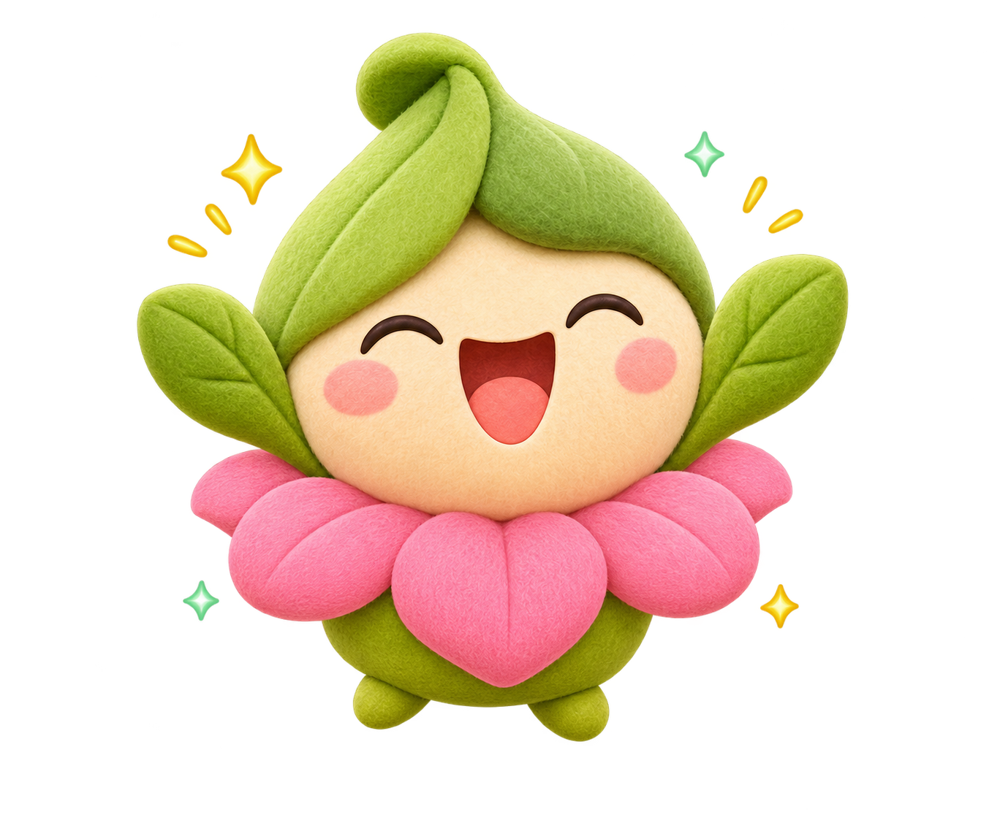

A PHONICS GARDEN ADVENTURE
Quokka's
G-Sound Garden
Help the Sproutlings grow with the right G sound!分辨正確的 G 音，幫助嫩芽精靈開花！
THE G-SOUND TRAIL
Garden Map 花園地圖
❀ ❀ ❀
❀ ❀ ❀
♥ ♥ ♥ ♥ ♥
⏳ 70
⭐ 0/8
STAGE 1 · 3×3
Find SOFT G /dʒ/
找出發 /dʒ/ 的 soft g 單字
🔊 Tap to hear the word and gain +3 seconds｜按喇叭聽單字並增加 3 秒
★ ★ ★
Garden in Bloom!
花園盛開了！

8/8Score｜得分
100%Accuracy｜正確率
0Listens｜聆聽